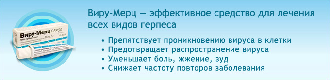

Статья посвящена герпетической инфекции, дана краткая информация о нозологических формах, вопросы лечения и профилактики.
Вирусы, относящиеся к семейству герпесвирусов, очень широко распространены в природе. Они могут вызывать заболевания различных видов диких и домашних животных. В настоящее время известно более 100 герпесвирусов, 8 из них выделены от человека. Герпесвирусы способны пожизненно персистировать в организме человека и вызывать заболевания с многообразными клиническими проявлениями. Внешне сходство герпесвирусов настолько велико, что под электронным микроскопом их практически невозможно различить. Индивидуальность «родственников» начинает проявляться только тогда, когда дело доходит до антигенных свойств вирионных белков и степени гомологии ДНК. Характерной чертой, помогающей электронно-микроскопическому распознаванию вируса, является наличие большой оболочки, хотя в препаратах также могут присутствовать и безоболочные вирусы.
Герпесвирусы человека и основные клинические формы инфекций
| Герпесвирусы человека | Основные заболевания, ассоциированные с типом герпесвирусов |
|---|
| Вирус простого герпеса 1 типа | Орофарингеальный герпес (десны и слизистые оболочки рта), лабиальный герпес, герпес кожи, офтальмогерпес, генитальный герпес, герпетический энцефалит, пневмониты |
| Вирус простого герпеса 2 типа | Неонатальный герпес, генитальный герпес, диссеминированный герпес |
| Вирус Varicella zoster (вирус опоясывающего лишая) | Ветряная оспа, опоясывающий герпес |
| Вирус Эпштейн-Барр | Инфекционный мононуклеоз, назофарингеальная карцинома, лимфома Беркитта, В-клеточная лимфома, синдром хронической усталости и иммунной депрессии |
| Цитомегаловирус | Врожденные повреждения ЦНС, ретинопатии, интерстициальный пневмонит, гепатит, энтероколит при СПИДе, цитомегалия при иммунодефиците и трансплантации органов |
| Вирус герпеса человека 6 типа | Внезапная экзантема (эритема новорожденных), синдром хронической усталости и иммунной депрессии |
| Вирус герпеса человека 7 типа | Внезапная экзантема (эритема новорожденных), синдром хронической усталости и иммунной депрессии |
| Вирус герпеса человека 8 типа | Саркома Kапоши у ВИЧ-отрицательных людей, саркома Kапоши у ВИЧ-инфицированных и больных СПИДом |
Вирус простого герпеса (ВПГ) 1 и 2 типов
ВПГ проникает в организм человека через повреждённые кожные покровы и слизистые оболочки. В первой фазе патогенеза вирус внедряется в клетки эпителия (слизистой полости рта, глотки или половых органов), где происходит его размножение.На слизистых и коже появляются характерные для герпетической инфекции папулы и везикулы.
Во второй фазе патогенеза ВПГ проникает в чувствительные нервные окончания и по центростремительным нервным волокнам в паравертебральные ганглии. В ядрах нейронов происходит репликация вируса. По эфферентным нервным волокнам вирус вновь достигает кожи и слизистых оболочек, где распространяется с появлением новых высыпаний.
В третьей фазе патогенеза (2-4 недели после заражения) при нормальном иммунном ответе происходит разрешение первичного заболевания и элиминация ВПГ из тканей и органов. Однако в паравертебральных ганглиях возбудитель в латентном состоянии сохраняется в течение всей жизни человека.
В четвертой фазе патогенеза происходит реактивация размножения ВПГ и его перемещение по нервным волокнам к месту первичного вхождения (воротам инфекции) с рецидивом специфического инфекционно-воспалительного процесса и возможной диссеминацией инфекции.
Генитальный герпес (ГГ)
Вирус простого герпеса персистирует у мужчин в мочеполовом тракте, а у женщин - в канале шейки матки, влагалище и уретре. Лица с бессимптомным течением заболевания являются резервуаром инфекции. Заражение генитальным герпесом происходит, в основном, при половом контакте. В период вирусемии у беременных женщин заражение плода происходит гематогенным путем, во время родов - контактным. По клинико-морфологическим проявлениям генитальный герпес подразделяется на 4 типа.
- Первый клинический эпизод первичного генитального герпеса - истинное проявление первичной герпетической инфекции. На половых органах развиваются отёк, гиперемия, затем появляются везикулярные высыпания, как правило, обильные. Везикулы быстро лопаются, образуя эрозивные, эрозивно-язвенные поверхности. Всё это сопровождается чувством жжения, зудом, мокнутием, болезненностью.
- Первичный клинический эпизод при существующей герпетической инфекции характеризуется первичным клиническим проявлением на фоне серопозитивности к вирусу простого герпеса. Вся симптоматика при этом менее выражена, чем при первом типе.
- Рецидивирующий генитальный герпес. Реактивация герпесвирусов происходит обычно в первые несколько месяцев после первичного эпизода заболевания. Проявления рецидивирующего генитального герпеса могут быть различными: от бессимптомного выделения вирусов или лёгких симптомов до очень болезненных сливных изъязвлений с четкими границами.
- Атипичный герпес встречается примерно в 20% всех случаев генитального герпеса и характеризуется тем, что специфические проявления герпетической инфекции скрыты симптоматикой сопутствующих местных инфекционных заболеваний (чаще всего кандидоза).
Неонатальный герпес
Наиболее часто (85%) инфицирование новорожденного происходит интранатально (при прохождении родового канала), независимо от того, имеются в данный момент очаги повреждения в области шейки матки и вульвы или нет (при бессимптомном выделении вируса). Возможно и постнатальное инфицирование новорожденного при наличии герпетических проявлений у матери и медперсонала, при использовании для ухода за новорожденными инфицированного инструментария. Трансплацентарное поражение плода ВПГ может привести к прерыванию беременности, врождённые пороки встречаются редко. Инфицированные дети часто рождаются недоношенными, с малым весом. Бессимптомная инфекция ВПГ, часто встречающаяся у более старших детей, редко наблюдается у новорожденных. Неонатальный герпес проявляются в трёх клинических формах:
1. Локальная, с повреждением кожи и слизистых.
2. Локальная форма с поражением ЦНС.
3. Диссеминированная форма герпетической инфекции с поражением ЦНС, печени, легких, надпочечников, ДВС-синдромом.
При герпетической инфекции в результате вирусемии в процесс могут вовлекаться несколько органов одновременно. Возможно развитие герпетического эзофагита, пневмонита, гепатита, Поражение периферической нервной системы может протекать в виде ганглионита, ганглионеврита, радикулоневрита, полинейропатии. Поражение центральной нервной системы при герпетической инфекции наиболее часто протекает в виде энцефалита или менингоэнцефалита.
Лабораторная диагностика: вирусологические методы обнаружения и идентификации вирусов простого герпеса; методы выявления антигенов вирусов простого герпеса - иммунофлюоресцентный и иммуноферментный анализ; полимеразная цепная реакция (ПЦР); цитоморфологические методы; выявление антител с помощью ИФА; методы оценки иммунного статуса. Материал для исследования берется в зависимости от локализации поражений (содержимое везикул, соскоб клеток, спинномозговая жидкость, аспират из бронхов, биоптат, кровь.
Лечение: противогерпетические препараты.
Вирус varicella-zoster
Уже из самого названия возбудителя можно догадаться, что он вызывает два типа поражений - ветряную оспу (varicella) и опоясывающий лишай (zoster). Основные пути передачи вируса - воздушно-капельный и контактный (через отделяемое везикул). Дети могут заболеть ветряной оспой при тесном контакте с больным опоясывающим лишаем.
Ветряная оспа. Вирус попадает в дыхательные пути, где происходит его репликация; иногда вирус инвазирует лимфатические узлы, вызывая первичную вирусемию. Клинически проявляется как острое инфекционное заболевание, сопровождающееся лихорадкой и пятнисто-везикулярной сыпью на коже и слизистых оболочках. Первично проявляется в виде мелкой пятнистой сыпи, трансформирующейся затем в папулёзную и везикулярную; характерен ложный полиморфизм сыпи. В период реконвалесценции пузырьки подсыхают с образованием корочек и заживлением без образования дефектов.
Опоясывающий лишай характеризуется высыпаниями по ходу отдельных чувствительных нервов нечётких розоватых пятен (диаметром 3-5 см), на фоне которых через 18-24 ч образуются группы болезненных везикул; основной признак, отличающий их от прочих герпетических кожных поражений, - наличие чёткой демаркационной зоны. Наиболее часто поражения локализуются на грудной клетке, но также могут располагаться по ходу любого чувствительного нерва и, как правило, односторонне. Поражения исчезают в течение 2-4 недели, боль может персистировать в течение недель и месяца.
Диагностика: выделение культуральным методом, микроскопия (клетки Цанка), серологические методы (определение антител к вирусным белкам).
Лечение: при ветряной оспе в большинстве случаев симптоматическое, при опоясывающем лишае - противогерпетические препараты.
Профилактика. Разработана живая вакцина против ветряной оспы, рекомендованная для введения детям старше 1 годa.
Вирус Эпштейн-Барр (ВЭБ)
Эпидемиология. Единственный резервуар инфекции - человек. Основной путь передачи - воздушно-капельный, реже трансмиссивный или половой.
В раннем возрасте инфекцию сопровождают стёртые проявления, либо она бывает вообще бессимптомной; первичное инфицирование в подростковом или более старшем возрасте может вызвать заболевание, известное как инфекционный мононуклеоз. Патогенез инфекционного мононуклеоза включает репликацию вируса в верхних отделах дыхательных путей и ассоциированной лимфоидной ткани с развитием местных воспалительных реакций и лихорадочного состояния. Возбудитель индуцирует появление популяции реактивных Т-клеток (атипичные лимфоциты), а также поликлональную активацию В-клеток и их дифференцировку в плазмоциты, секретирующие гетерофильные AT с низким аффинитетом к вирусу, но реагирующие с различными субстратами, включая эритроциты различных животных. При этом геном вируса может сохраняться в В-лимфоцитах в латентной форме. Значительно реже выявляют хроническую персистенцию вируса, известную как реактивированная хроническая ВЭБ-инфекция. Состояние представлено множеством форм и встречается достаточно редко; среди них чаще наблюдают синдром хронического мононуклеоза (характерны жалобы на постоянную слабость при наличии или отсутствии каких-либо изменений лабораторных показателей). Хроническая активная ВЭБ инфекция обычна для пациентов с иммунодефицитами (наиболее часто со СПИДом и реципиентов трансплантатов). Наиболее часто проявляется прогрессирующим лимфопролиферативным заболеванием либо лимфомами ЦНС. Способность возбудителя вызывать злокачественную трансформацию клеток даёт основание предполагать участие вируса (как коканцерогена) в развитии болезней злокачественного роста, таких как африканские формы лимфомы Беркетта, карцинома носоглотки у мужчин некоторых этнических групп Южного Китая, а также саркома Капоши у пациентов со СПИДом.
Механизмы развития злокачественных трансформаций, индуцированных ВЭБ, связаны со способностью инфицировать В-лимфоциты и нарушать их дальнейшую дифференцировку; при этом часть вирусного генома экспрессируется в инфицированных лимфобластах.
Диагностика: обнаружение атипичных мононуклеаров в крови, серологические методы, ПЦР.
Лечение: при инфекционном мононуклеозе, как правило, симптоматическое; вирус чувствителен к ряду противогерпетических препаратов.
Цитомегаловирусная (ЦМВ) инфекция
Вирус проникает в организм через слюну при поцелуях и через секреты гениталий при половых контактах, через грудное молоко и при использовании нестерильного шприца, при трансплантации органов и переливании донорской крови, при использовании донорской спермы и яйцеклеток. Предполагают, что главным хранилищем вирусов являются мононуклеарные фагоциты - моноциты и макрофаги, а так же эпителиоциты слюнных желез и почечных канальцев, гепатоциты и некоторые другие клетки.
Заражение цитомегаловирусом может произойти ещё в период внутриутробного развития плода. Необходимым условием заражения плода является вирусемия беременных. Если плод заразился этим вирусом в утробе матери, то это будет врождённая цитомегаловирусная инфекция. У таких детей может быть желтуха, увеличиваются печень и селезёнка, могут быть тяжёлые врождённые пороки, иногда несовместимые с жизнью. Инфекция может протекать и бессимптомно, но у 5-25% таких детей в последующие несколько лет может наблюдаться снижение слуха, нарушения психики, могут появиться аномалии глаз. Если ребёнок заражается во время или через небольшой промежуток времени после рождения, то он плохо прибавляет в весе, у него может развиться гепатит, анемия, появится сыпь.
В подростковом возрасте цитомегаловирусная инфекция может проявить себя в виде мононуклеоза. При этом заболевании поднимается температура, появляются боли в мышцах, развивается быстрая утомляемость. У людей с иммунодефицитом инфекция протекает обычно тяжело.
Цитомегаловирусная инфекция является частым спутником СПИДа. При этом поражаются многие внутренние органы, что может закончиться смертью больного. Основные симптомы: лихорадка, недомогание, отсутствие аппетита, боли в мышцах, кашель. При поражении тонкого кишечника могут возникать язвы, которые, в свою очередь могут кровоточить или перфорировать (в стенке желудка или кишечника появится сквозное отверстие). Ретинит (поражение сетчатки глаза), вызванный цитомегаловирусом, может привести к слепоте. У человека с нормальным иммунитетом цитомегаловирусная инфекция никак себя не проявляет и может не давать о себе знать всю жизнь. После пересадки органов и костного мозга активная цитомегаловирусная инфекция обычно развивается в первые четыре месяца после операции и очень часто является причиной заболеваний, и даже смерти реципиентов. Источником инфекции может стать реактивация собственного ЦМВ или повторное заражение реципиента через донорские органы, переливание крови и ее компонентов. Существует предположение, что ЦМВ-инфекция играет определённую роль в патогенезе острых и хронических реакций трансплантата против хозяина.
Диагностика: выделение вируса из мочи (тропен к ткани почек), микроскопия (клетки в виде «глаза совы»), серологические методы, ПЦР.
Лечение: современные противогерпетические препараты - ациклические нуклеозиды - обладают высокой специфичностью и неплохо себя зарекомендовали в лечении цитомегаловирусных инфекций. В последние годы обнаружены штаммы ЦМВ, имеющие двойную устойчивость к ганцикловиру и фоскарнету.
Вирус герпеса 6 типа (ВГ-6)
Клинические проявления инфекции ВГ-6:
| а) | В-клеточная лимфома. В 80-90% случаев В-клеточных лимфом в трансформированных клетках выделяют интегрированные фрагменты ДНК, гомологичные геному вируса, что даёт основания рассматривать его как возможный этиологический агент. |
| б) | Exanthema subitum (roseola infantum). Розеола детская (внезапная), или ложная краснуха - острая вирусная инфекция детей младшего возраста, вызванная ВГ-6; характерны внезапный подъём температуры, лихорадка (иногда с судорогами) и критическое разрешение через несколько дней с появлением пятнисто-папулёзной сыпи. |
| в) | Синдром хронической усталости. Относительно недавно выделен в самостоятельную нозологическую единицу; основание для установления этиологической роли ВГ-6 - выявление специфических антител в сыворотке пациентов. Однако это положение остаётся предметом дискуссии, т.к. эти антитела можно выявить у 90% здоровых лиц. |
Диагностика: выделение на культуре клеток, иммунологические методы, микроскопия.
Лечение: лечение симптоматическое, получены данные об эффективности ганцикловира.
Вирус герпеса 7 типа (ВГ-7)
Свойства вируса: растет медленно, лишь на CD4 лимфоцитах человека, которые имеют клеточные рецепторы к этому вирусу. Вирус определяется в периферической крови и слюне. Очень часто у людей с вирусом герпеса 7 типа выделяют вирус герпеса 6 типа.
Вызывает заболевания: является возможной причиной синдрома хронической усталости (Chronic Fatigue Syndrome, CFS). Полагают, что вирус герпеса человека 7 типа может быть причиной лимфопролиферативных заболеваний.
Проявления заболевания: синдром хронической усталости можно заподозрить по совокупности ряда признаков: беспричинная слабость, повышенная плаксивость; высокая утомляемость; повышенный уровень тревожности; депрессии; нарушение сна (фазы засыпания). На утро чувство разбитости; температура 36,9-37,3 гр. Цельсия в течение 6 месяцев; беспричинное увеличение лимфоузлов - лимфоаденопатия.
Диагностика: полимеразная цепная реакция (ПЦР), иммуноферментный анализ (ИФА); иммунограмма, на которой можно отметить: снижение NK (естественные киллеры), увеличение CD8 лимфоцитов, ЦИК, IgG; анализ личности больного (симуляция).
Лечение: симптоматическое. Проводится невропатологом или психиатром. Заключается в противовирусной терапии и лечении, направленном на укрепление иммунитета.
Профилактика: не разработана.
Вирус герпеса 8 типа (ВГ-8, HHV8)
ДНК этого вируса постоянно обнаруживается в ткани СПИД-ассоциируемой саркомы Капоши, в то время как в нормальной ткани соседних участков не выявляется. Было установлено, что HHV8 связан со всеми типами саркомы Капоши, включая эндемическую у африканцев, классическую у пожилых людей средиземноморья и трансплантат-связанную. Показано, что за 3-10 лет развитию саркомы Капоши предшествует инфекция, вызванная HHV8. С помощью ПЦР одни авторы вирус обнаруживали в семенной жидкости и сперме, хотя другие этого не подтвердили. HHV8 был выявлен в эндотелиальных клетках, циркулирующих CD20+ лимфоцитах (В-клетки), носовом секрете, бронхоальвеолярной леважной жидкости у больных с легочной локализацией саркомы Капоши.
Клиника. Классическая форма проявляется в виде локализованных узлов коричнево-красного - синюшно-красного цвета с локализацией преимущественно на коже нижних конечностей. Выделяют следующие стадии заболевания: кожные проявления, локализованное торпидное течение (классическое), кожные проявления, локализованное агрессивное течение с увеличением или без увеличения лимфатических узлов (африканский локализованный агрессивный вариант), генерализованные кожные проявления и/или поражение лимфатических узлов (африканская лимфаденопатия и эндемический вариант), висцеральные проявления (эпидемический вариант).
Лечение. Сегодня имеется достаточно много химиопрепаратов, рекомендуемых для лечения саркомы Капоши у больных СПИДом, хотя эффект от терапии не всегда удовлетворителен, применяются так же хирургическое и лучевое лечение.
Материалы по теме
Статьи
Вирус герпеса 1 и 2 типа (вирус простого герпеса)
- Инфекции, вызванные вирусом простого герпеса
В журнале Lancet опубликована статья ведущих американских специалистов, посвящённая проблемам заболеваний, вызванных вирусом простого герпеса (ВПГ) первого и второго типов, которые широко распространены в популяции.
- Вирус герпеса против метастатической меланомы
По результатам пилотного исследования, проведённого в Великобритании, инъекция авирулентного, но способного к репликации, вируса простого герпеса в ткань опухоли метастатической меланомы, вызывает гибель опухолевых клеток, не повреждая соседние здоровые ткани.
- Два десятилетия применения противовирусных препаратов не повлияли на уровень резистентности вируса простого герпеса к ацикловиру и пенцикловиру
Несмотря на то, что общее количество этих аналогов нуклеозидов, использованное для лечения герпесвирусной инфекции, превысило 2,3x106 кг, частота резистентности к ацикловиру среди штаммов ВПГ, выделенных у пациентов с нормальной функцией иммунной системы, осталась на прежнем уровне и составляет 0,3%.
- Факторы риска и частота передачи герпесвирусной инфекции от матери к новорожденному
Наиболее распространённым путем передачи герпесвирусной инфекции новорожденным является контакт плода с инфицированным содержимым половых путей матери во время родов.
- Лечение обострений простого герпеса короткими курсами валацикловира
В журнале Antimicrobial Agents and Chemotherapy опубликованы результаты двух рандомизированных, плацебо-контролируемых, многоцентровых исследований по лечению обострений орофациального герпеса с применением коротких курсов валацикловира (Валтрекса).
- FDA одобрило валацикловир для однодневной терапии Herpes labialis
Препарат валацикловир компании GlaxoSmithKline (Валтрекс) был одобрен FDA для однодневной терапии лабиального герпеса с целью снижения длительности лечения и улучшения исходов.
- В новых широкомасштабных исследованиях подтверждена эффективность ацикловира при лабиальном герпесе
В соответствии с данными, опубликованными в журнале Antimicrobial Agents and Chemotherapy, крем с ацикловиром безопасен и эффективен в лечении инфекции, вызванной вирусом простого герпеса 1 типа (Herpes labialis), но не предотвращает возникновение новых высыпаний.
- Новые препараты для местного лечения Нerpes labialis
В настоящее время существуют 3 новых препарата для местного лечения Нerpes labialis, которые одобрены для применения Управлением по контролю за пищевыми продуктами и лекарственными препаратами США (FDA): пенцикловир крем (Денавир), n-докозанол крем (Абревал) и ацикловир крем.
- Преимущества автоматизированной ПЦР при выявлении и определении типа генитального герпеса
В журнале Sexually Transmitted Infections британские исследователи из Sandyford Initiative, Глазго, отмечают, что проведение автоматизированной ПЦР является эффективным методом выявления и определения типа генитального герпеса.
- Двухдневный курс ацикловира для лечения рецидивирующего генитального герпеса
Для оценки эффективности более короткого курса терапии ученые во главе с Anna Wald из Университета Вашингтона (США) провели рандомизированное двойное слепое плацебоконтролируемое исследование эффективности ацикловира (800 мг внутрь 3 раза в сутки в течение 2 дней) при рецидивирующем генитальном герпесе, вызванном ВПГ-2.
- Валацикловир в терапии генитального герпеса: сравнение 3-дневного и 5-дневного курсов лечения
Короткий курс терапии эпизодов рецидивирующего генитального герпеса валацикловиром так же эффективен, как и 5-дневное назначение препарата.
- FDA одобрило более короткий курс лечения рецидивов генитального герпеса валацикловиром
Управление по контролю за пищевыми продуктами и лекарственными препаратами США (FDA) одобрило дополнение к инструкции по применению противогерпетического препарата Валтрекса (валацикловира) компании GlaxoSmithKline. Согласно этому дополнению, при рецидивах генитального герпеса возможно использование более короткого курса лечения.
- Первая эффективная вакцина для профилактики генитального герпеса обладает половой специфичностью
На 40-й ежегодной конференции по антимикробным препаратам и химиотерапии (ICAAC) были представлены результаты разработки вакцины для профилактики генитального герпеса, которая, как оказалось, эффективна только у женщин.
Вирус герпеса 3 типа
Вирус герпеса 4 типа
- Вирус Эпштейн-Бар и развитие опухолей
Учёные из University of Michigan Medical School обнаружили вероятную связь между развитием рака молочной железы, злокачественными заболеваниями крови и вирусом Эпштейн-Бара, который вызывает инфекционный мононуклеоз.
Вирус герпеса 5 типа
- Цитомегаловирусная инфекция центральной нервной системы обычно возникает у пациентов с иммунологическими нарушениями
Цитомегаловирусная инфекция (ЦМВИ) наиболее часто возникает у пациентов с нарушениями иммунологического статуса, например, у ВИЧ-инфицированных или на фоне иммуносупрессивной терапии пациентов, перенесших операции трансплантации органов.
- Валацикловир является препаратом выбора для профилактики развития цитомегаловирусной инфекции у пациентов после трансплантации костного мозга
В многоцентровое рандомизированное исследование, результаты которого были опубликованы в журнале Clinical Infectious Diseases, было включено 168 пациентов после трансплантации костного мозга, имеющих антитела к цитомегаловирусу (ЦМВ).
- Применение ганцикловира у детей с врожденной ЦМВ инфекцией предотвращает потерю слуха
Согласно данным, представленным на ежегодной национальной конференции Американской академией педиатрии (ААР), ганцикловир может предотвратить потерю слуха или прогрессирование ухудшения слуха у детей с врождённой цитомегаловирусной инфекцией (ЦМВ).
- Врождённая цитомегаловирусная инфекция
Согласно данным, полученным бразильскими учёными и опубликованным в The Pediatric Infectious Disease Journal, цитомегаловирусная инфекция является наиболее частой врожденной инфекцией, причем 34% детей, у которых затем ЦМВ инфекция проявляется клинически, рождаются преждевременно.
- Передача цитомегаловируса от матери к новорожденному через грудное молоко
Согласно данным, опубликованным в журнале Lancet, риск передачи цитомегаловирусной инфекции при грудном вскармливании значительно выше у недоношенных новорожденных, чем у детей, родившихся в срок.
Вирус герпеса 6 типа
Вирус герпеса 8 типа
- Вирус герпеса, ассоциированный с саркомой Капоши, может передаваться вертикально
Результаты нового исследования, проведённого учеными из Университета Небраска (Линкольн, США), были опубликованы в журнале International Journal of Cancer. Оказалось, что вирус герпеса 8 типа (семейство герпесвирусов, подсемейство гамма-герпес вирусов), ассоциированный с саркомой Капоши - Kaposhi Sarkoma Herpes Virus (KSHV) - может передаваться вертикально от матери к плоду.
- Вирус герпеса 8 типа может передаваться через кровь
Вирус герпеса 8 типа может передаваться через кровь Согласно сообщению, опубликованному в журнале Medicina, наркоманы, использующие общие иглы, могут заразиться вирусом герпеса 8 типа (ВГ-8), который связывают с развитием саркомы Капоши.
. . .
Статья подготовлена для тематической рассылки «Актуальные проблемы медицины»

Виру-Мерц — противовирусный препарат для наружного применения. Активен в отношении вирусов Herpes simplex I и II типов Herpes zoster. Ингибирует абсорбцию и пенетрацию вирусов внутрь клетки. Резистенции вирусов к препарату не возникает. Снимает характерные для проявления герпетической инфекции боль жжение и зуд, сокращает длительность заболевания, удлиняет периоды ремиссии.
